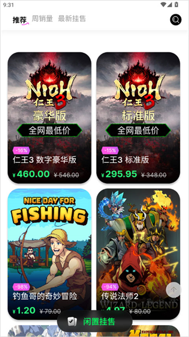

SteamCICI 用了大半年，说点当初没注意到的事
从第一次下单到现在十多笔交易走下来，SteamCICI 这套托管加自动入库的路子越用越顺手，但也慢慢摸到了一些当初注册时没细看的细节和局限。
当初为什么装它
去年年底换了个新 Steam 账号，想补几款老游戏。社区市场只能交易饰品，CDK 类的交易一直没个放心的渠道——闲鱼上被骗过一次之后就不再碰了。朋友提了 SteamCICI官网，说它有托管机制，钱不直接打给卖家，我就抱着试试看的心态从官方下载拿了 APK 装上了。
说白了，当初注册的动机很单纯：有个地方能买到便宜点的 Steam CDK，又不想再被骗。
哪点越用越顺手
最开始不习惯的是付款之后那几分钟。钱付出去了，订单状态显示"托管中"，然后就是一个五步进度条慢慢点亮——验证 CDK 内容、匹配区服、自动入库、验证游戏所有权、结算给卖家。刚下单那次我盯着那个进度条看了三分钟，总觉得哪一步卡住了。
现在十几笔交易下来，我已经能大致预估每步耗时了。正常情况下整个自动入库流程不会超过十分钟，五步里最容易"看起来卡住"的是第四步验证游戏所有权——系统要调 Steam 接口去查你的库，Steam 那边偶发超时，进度条就会停在那里几分钟不动。起初我会反复刷新订单页，现在知道等就行，真有问题系统会自动触发退款。
这种信任不是一天建立的。前三四笔我每次都要点进去订单详情看时间戳，确认每步都走过了。到后来下单付款之后直接把手机扔一边，该干嘛干嘛，过会儿打开 Steam 客户端就看到游戏库新增了。
说个反直觉的变化：订单列表不能删记录，当初觉得这设计太不人性化，现在反而觉得挺好。去年买的那批游戏，现在翻订单还能看到当时付了多少钱、卖家是谁、哪一步卡过一下。就像一本自己的 Steam 消费账本，挺有意思。
哪点越用越烦
卖家不标注区服这件事，我觉得是平台该管但没管住的。
Steam CDK 分不同区服，国区、美区、俄区价格差异很大，但激活后库是通的。问题是有些卖家挂单时区服标注含糊，写个"全球"其实只能在特定区服激活，"国区"有时候又包含了锁运行的条款。我踩过一次：买了个标注"全球"的码，自动入库第四步被打回，Steam 返回"区服不匹配"——系统自动给我退了钱，但耽误了我一下午的时间，那个价格的码已经被别人抢走了。
还有一个：自动入库需要你授权 Steam 账号。这件事本身没问题，去SteamCICI文档翻了一下，里面也说清楚了授权范围，只在自动兑换时临时调用，不会保存你的 Steam 密码。但每次自动入库都要弹授权页面，有时候我在外面用手机网络，Steam 客户端加载慢，授权环节就要等好几分钟。后来发现可以在 Wi-Fi 环境下先授权，或者把 Steam 客户端保持在后台，授权响应会快很多——但这个小技巧文档里没写，是逛论坛时看到别的玩家分享的。
哪个功能成了每天离不开的，哪个碰都没再碰
每天离不开的其实不是 SteamCICI 本身，而是它背后那个比价逻辑。Steam 商店打折我知道几轮了，但卖家之间的报价差异有时候比折扣还大。同一款游戏，Steam 商店打七折，SteamCICI 上可能有卖家挂着五折的 CDK——前提是区服对、码没被用过。我现在养成了一个习惯：Steam 商店看到想玩的游戏，先去 SteamCICI 搜一遍，比价之后再决定走哪条路。
从来没碰过的是卖家侧。当初注册时好奇点进去看过挂售流程，要实名认证、要提交 CDK 内容、要等上架审核。我手头没多余的码要卖，就没往下走。现在偶尔看看卖家侧的订单状态说明——"待接单"、"买家已付款"、"自动入库中"——能理解卖家那边的心态了，跟买家一样盯着进度条，只是方向反过来的。

观感修正
装它之前，我以为这就是一个"Steam CDK 的闲鱼"——买家卖家直接对接，平台抽点。用了半年才发现，托管加自动入库这套东西才是核心，不是什么锦上添花的功能，而是整个平台存在的理由。
当初高估的是"便宜"这件事。有时候 SteamCICI 上确实能淘到好价，但更多时候标价跟 Steam 商店差不了多少，尤其是热门新作——热门游戏的 CDK 被扫得快，卖家报价反而会被拉高。真正能省钱的要么是冷门老游戏、要么是跨区购买，后者又要担区服不匹配的风险。
当初低估的是平台的退款机制。样本里提到的"已退款"状态、"已释放"状态、资金托管不放行这些细节，我当初注册时看了一眼就跳过了。直到那次区服不匹配的交易自动退款到账，我才意识到这套机制真的能救命——钱不是打给卖家再申诉退，而是从始至终就没离开平台。
去留结论
短期内不会卸载。SteamCICI 现在在我的"备选购物清单"里，不是每次 Steam 看到游戏都先跑它，但遇到心仪的、价格超过心理预期的游戏，我一定会先去比价。
什么时候该换了？如果哪天真出现一个更便宜、同样有托管机制的 CDK 平台，我会考虑。但目前还没看到能同时做到托管加自动入库的——要么只有直接交易，要么只有社区市场。
另外说句题外话，SteamCICI 偶尔也会出点小问题：闪退、白屏、某个版本和 Steam 接口不兼容。这些问题都能解决，官方更新也快。但如果哪天连续遇到两次自动入库卡壳、客服半天没响应，那可能就要找找替代方案了。毕竟当初选它，核心就是省心。
对了，SteamCICI 的相关资料和文档在GitHub、Gitee和GitCode上都能搜到，不同仓库各自维护，找得到就行。